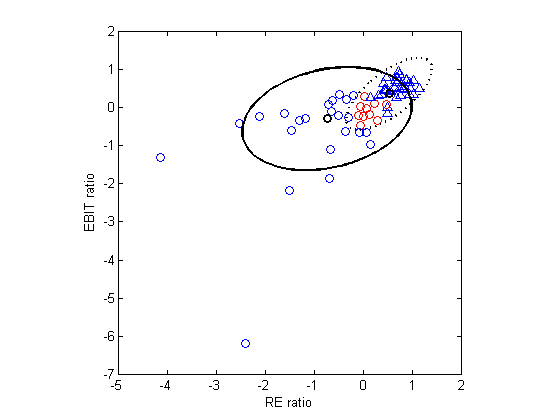
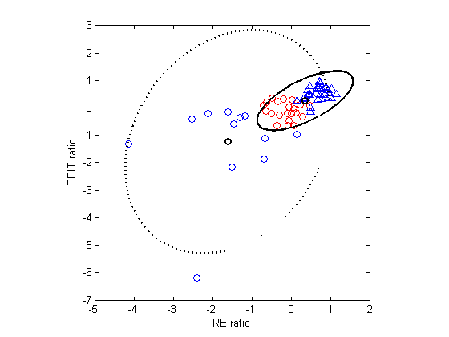

Contents
function [modelStud modelGauss]=mixStudentBankruptcyDemoHannes()
Fit a mixture of Gaussians and mixture of Students to some data
and use the resulting models to classify This example is based on fig 3.3 of Kenneth Lo's PhD thesis, "Statistical methods for high throughput genomics", UBC 2009
%PMTKauthor Hannes Bretschneider
Load data
bank = importdata('bankruptcy.txt'); Y = bank.data(:,1); % 0,1 X = bank.data(:,2:3); X = standardizeCols(X); clear bank; setSeed(2);
Fit Student
[N D] = size(X); K = 2; [modelStud, loglikHist] = mixStudentFitEm(X, K); modelStud.dof [z, post] = mixStudentInfer(modelStud, X); resultplotfn(X, Y, modelStud.mu, modelStud.Sigma, post', loglikHist(end)); modelStud.post = post'; fprintf('Number of errors (Student):\t %.0f\n', errors(Y, modelStud)); printPmtkFigure('mixStudentDemoStudentplot')
ans =
2.3393 999.9999
Number of errors (Student): 10
 Fit Gaussian
[N D] = size(X); K = 2; [modelGauss, loglikHist] = mixGaussFitEm(X, K); [z, post] = mixGaussInfer(modelGauss, X); modelGauss.post = post'; resultplotfn(X, Y, modelGauss.mu, modelGauss.Sigma, modelGauss.post, loglikHist(end)); fprintf('Number of errors (Gaussian): %.0f\n', errors(Y, modelGauss)); printPmtkFigure('mixStudentDemoGaussplot')
Number of errors (Gaussian): 21
end %%%%%% function resultplotfn(X, Y, mu, Sigma, post, loglik) n = size(X, 1); Yhat = (post(1,:)>=post(2,:))'; marker(logical(Y)) = '^'; marker(~logical(Y)) = 'o'; linestyles = {'-', ':'}; err = sum(Y~=Yhat); % flip labels around if encoding is reversed in Yhat if err > n/2 Yhat = ~Yhat; end color(Y==Yhat) = 'b'; color(Y~=Yhat) = 'r'; figure; hold on; for i=1:n plot(X(i, 1), X(i, 2), marker(i), 'MarkerSize', 6, 'MarkerEdgeColor', color(i)); end K = size(mu,2); for k=1:K h=gaussPlot2d(mu(:,k), Sigma(:,:,k), 'color', 'k'); set(h, 'linestyle', linestyles{k}); plot(mu(1,k), mu(2,k),'o','linewidth',2, 'color', 'k'); end axis square box on %set(gca, 'YTick', -2:2); xlabel('RE ratio') ylabel('EBIT ratio') end function err = errors(Y, model) N = length(Y); post = model.post; Yhat = (post(1,:)>=post(2,:))'; err = sum(Y ~= Yhat); err = min(N-err,err); end
ans =
mu: [2x2 double]
Sigma: [2x2x2 double]
mixweight: [0.3500 0.6500]
K: 2
dof: [2.3393 999.9999]
post: [2x66 double]